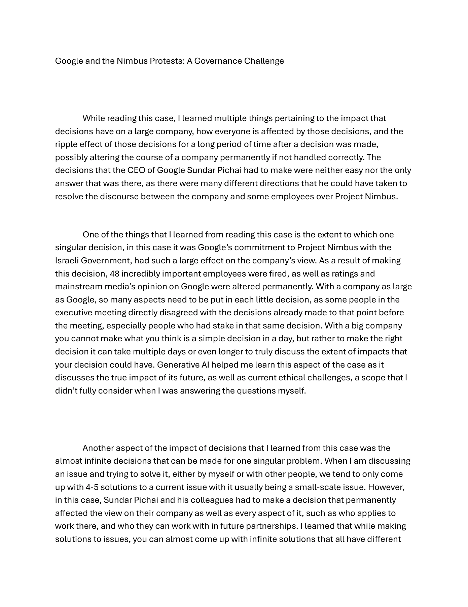
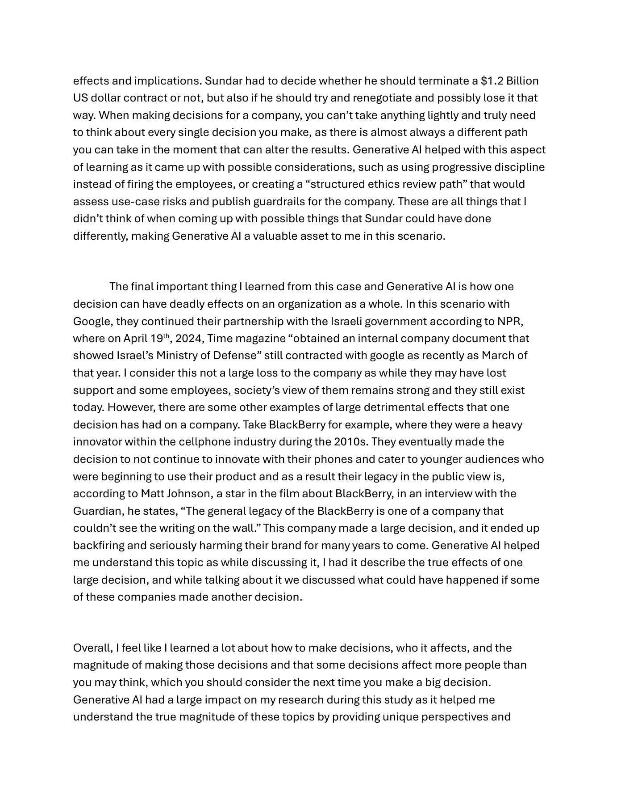
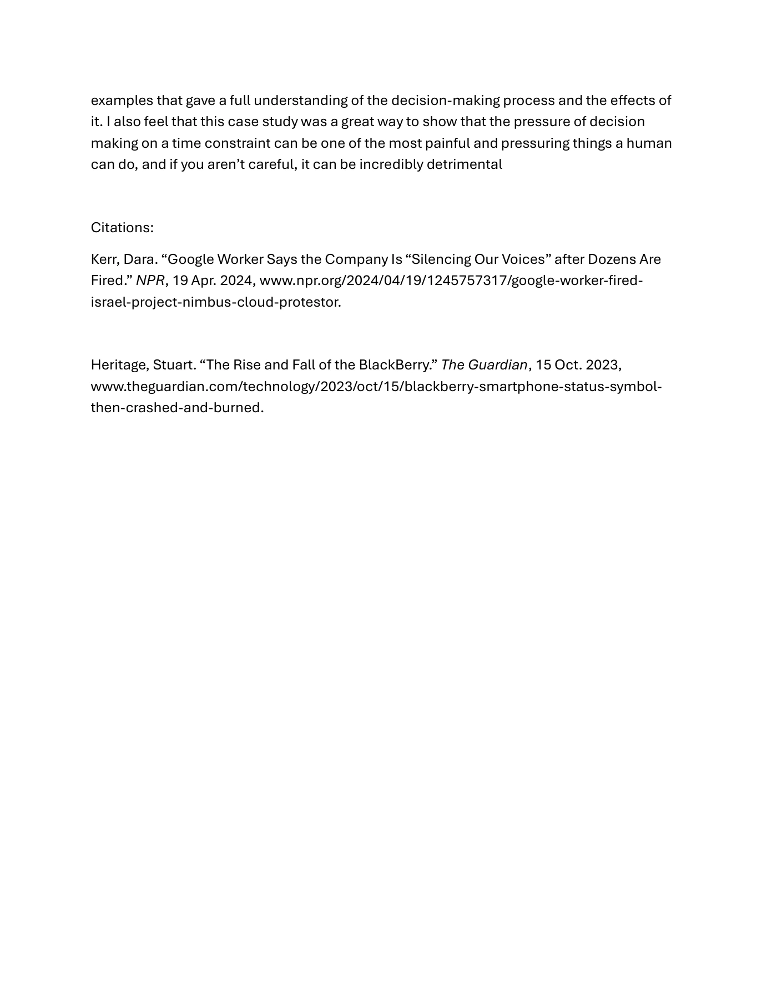

Logan Guild / Case studies
Google and the Nimbus Protests: A Governance Challenge
3 pages. Read below without downloading. Select a page image to enlarge it.

Page 1 text
Google and the Nimbus Protests: A Governance Challenge
While reading this case, I learned multiple things pertaining to the impact that
decisions have on a large company, how everyone is a ected by those decisions, and the
ripple e ect of those decisions for a long period of time after a decision was made,
possibly altering the course of a company permanently if not handled correctly. The
decisions that the CEO of Google Sundar Pichai had to make were neither easy nor the only
answer that was there, as there were many di erent directions that he could have taken to
resolve the discourse between the company and some employees over Project Nimbus.
One of the things that I learned from reading this case is the extent to which one
singular decision, in this case it was Google’s commitment to Project Nimbus with the
Israeli Government, had such a large e ect on the company’s view. As a result of making
this decision, 48 incredibly important employees were fired, as well as ratings and
mainstream media’s opinion on Google were altered permanently. With a company as large
as Google, so many aspects need to be put in each little decision, as some people in the
executive meeting directly disagreed with the decisions already made to that point before
the meeting, especially people who had stake in that same decision. With a big company
you cannot make what you think is a simple decision in a day, but rather to make the right
decision it can take multiple days or even longer to truly discuss the extent of impacts that
your decision could have. Generative AI helped me learn this aspect of the case as it
discusses the true impact of its future, as well as current ethical challenges, a scope that I
didn’t fully consider when I was answering the questions myself.
Another aspect of the impact of decisions that I learned from this case was the
almost infinite decisions that can be made for one singular problem. When I am discussing
an issue and trying to solve it, either by myself or with other people, we tend to only come
up with 4-5 solutions to a current issue with it usually being a small-scale issue. However,
in this case, Sundar Pichai and his colleagues had to make a decision that permanently
a ected the view on their company as well as every aspect of it, such as who applies to
work there, and who they can work with in future partnerships. I learned that while making
solutions to issues, you can almost come up with infinite solutions that all have di erent
Page 2 text
e ects and implications. Sundar had to decide whether he should terminate a $1.2 Billion
US dollar contract or not, but also if he should try and renegotiate and possibly lose it that
way. When making decisions for a company, you can’t take anything lightly and truly need
to think about every single decision you make, as there is almost always a di erent path
you can take in the moment that can alter the results. Generative AI helped with this aspect
of learning as it came up with possible considerations, such as using progressive discipline
instead of firing the employees, or creating a “structured ethics review path” that would
assess use-case risks and publish guardrails for the company. These are all things that I
didn’t think of when coming up with possible things that Sundar could have done
di erently, making Generative AI a valuable asset to me in this scenario.
The final important thing I learned from this case and Generative AI is how one
decision can have deadly e ects on an organization as a whole. In this scenario with
Google, they continued their partnership with the Israeli government according to NPR,
where on April 19th, 2024, Time magazine “obtained an internal company document that
showed Israel’s Ministry of Defense” still contracted with google as recently as March of
that year. I consider this not a large loss to the company as while they may have lost
support and some employees, society’s view of them remains strong and they still exist
today. However, there are some other examples of large detrimental e ects that one
decision has had on a company. Take BlackBerry for example, where they were a heavy
innovator within the cellphone industry during the 2010s. They eventually made the
decision to not continue to innovate with their phones and cater to younger audiences who
were beginning to use their product and as a result their legacy in the public view is,
according to Matt Johnson, a star in the film about BlackBerry, in an interview with the
Guardian, he states, “The general legacy of the BlackBerry is one of a company that
couldn’t see the writing on the wall.” This company made a large decision, and it ended up
backfiring and seriously harming their brand for many years to come. Generative AI helped
me understand this topic as while discussing it, I had it describe the true e ects of one
large decision, and while talking about it we discussed what could have happened if some
of these companies made another decision.
Overall, I feel like I learned a lot about how to make decisions, who it a ects, and the
magnitude of making those decisions and that some decisions a ect more people than
you may think, which you should consider the next time you make a big decision.
Generative AI had a large impact on my research during this study as it helped me
understand the true magnitude of these topics by providing unique perspectives and
Page 3 text
examples that gave a full understanding of the decision-making process and the e ects of it. I also feel that this case study was a great way to show that the pressure of decision making on a time constraint can be one of the most painful and pressuring things a human can do, and if you aren’t careful, it can be incredibly detrimental Citations: Kerr, Dara. “Google Worker Says the Company Is “Silencing Our Voices” after Dozens Are Fired.” NPR, 19 Apr. 2024, www.npr.org/2024/04/19/1245757317/google-worker-fired- israel-project-nimbus-cloud-protestor. Heritage, Stuart. “The Rise and Fall of the BlackBerry.” The Guardian, 15 Oct. 2023, www.theguardian.com/technology/2023/oct/15/blackberry-smartphone-status-symbol- then-crashed-and-burned.